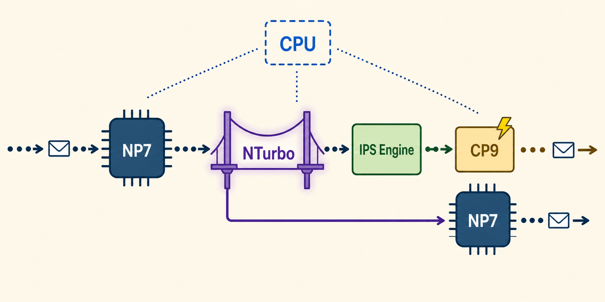

The Problem NTurbo Solves
Security Profiles Kill the Fast Path — Unless…
Normally, adding any security inspection forces the NP7 to step back entirely. Every packet goes to the CPU. NTurbo is Fortinet's answer — a dedicated driver that bridges the NP7 and the IPS engine, keeping hardware acceleration alive for flow-based inspection.
NTurbo Packet Flow — Flow-Based IPS Session
NP7
Receives packet
fast path
fast path
→
NTurbo
Driver
Driver
Bridges NP7
↔ IPS engine
↔ IPS engine
→
IPS
Engine
Engine
Security
inspection
inspection
→
CP9
Pattern matching
offloaded here
offloaded here
→
NTurbo
Driver
Driver
Returns packet
to NP7
to NP7
→
NP7
Forwards out
egress interface
egress interface
🖥️ CPU — Orchestrates but does not bottleneck the forwarding path

Key Facts
What You Need to Remember
NTurbo only works with flow-based profiles. The moment a proxy-based profile is added to the policy, NTurbo cannot help. The entire session drops to the CPU slow path.
CP9 + IPSA: When packets reach the IPS engine via NTurbo, the CP9 offloads pattern matching via a feature called IPSA (IPS Acceleration). The CPU still orchestrates but the compute-heavy signature matching is handled in silicon. Advanced mode (default on most devices) offloads more pattern types than basic mode.
NTurbo is enabled by default. To disable globally:
set np-accel-mode none under config ips global. To disable per-policy: set np-acceleration disable on the firewall policy. Useful for troubleshooting — not production.
🧠 One-Line Mental Model
NTurbo = the bridge that lets the NP7 keep forwarding while the IPS engine inspects. CP9 = the engine that handles the pattern matching so the CPU doesn't have to.